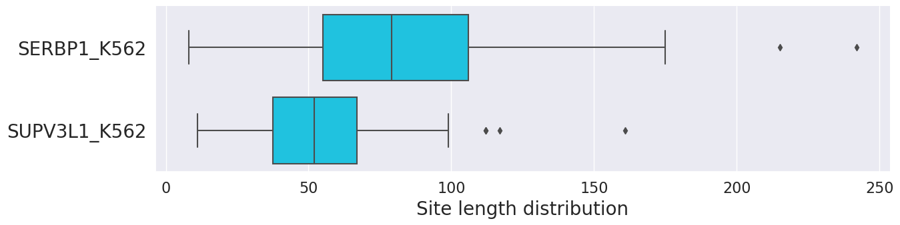
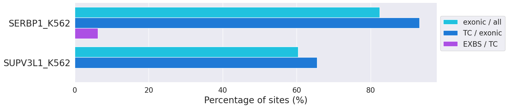

List of available statistics generated by Peakhood (peakhood merge):
Table: Merged dataset statistics, listing over all datasets: the number of transcripts containing sites, the number of selected transcripts (most likely transcripts from peakhood extract) with sites, the number of site pairs on all transcripts (same and different datasets / RBPs), the number of site pairs from different datasets (different RBPs), the number of site pairs on the selected transcripts (same and different RBPs), and the number of site pairs on the selected transcripts (different RBPs).
| Description | Count |
|---|---|
| # all transcripts with sites | 166 |
| # selected transcripts with sites | 78 |
| # site pairs on all transcripts | 199 |
| # site pairs (from different datasets) | 2 |
| # site pairs on selected transcripts | 57 |
| # site pairs (from different datasets) | 0 |
Table: Site region type statistics. For each input dataset, different region types with corresponding site numbers are given: number of all dataset sites, number of intronic sites, number of intergenic sites, number of exonic sites with assigned genomic context, number of exonic sites with assigned transcript context (TC), number of exonic sites with assigned transcript context after merging adjacent exon border sites (TCM), number of exonic sites at exon borders connected by intron-spanning reads (before merging), percentage of exonic sites (exonic sites / all sites), and percentage of exonic transcript context sites (TC sites / all exonic sites).
| Dataset | # all sites | # intronic | # intergenic | # exonic (GC) | # exonic (TC) | # exonic (TCM) | # exon border | % exon / all | % TC / exonic |
|---|---|---|---|---|---|---|---|---|---|
| SERBP1_K562 | 125 | 22 | 0 | 7 | 96 | 92 | 6 | 82.40 | 93.20 |
| SUPV3L1_K562 | 48 | 19 | 0 | 10 | 19 | 19 | 0 | 60.42 | 65.52 |
Input site length distribution for every --in input dataset, after pre-merging of book-ended and overlapping input sites (if set) and pre-filtering (if set, e.g. by score or length). Note that set --pre-merge leads to increased lengths if there are adjacent or overlapping sites. Moreover, set --max-len (default 200) limits the maximum site length, but this can increase again if --pre-merge is set (since --pre-merge is applied after --max-len filtering).

Figure: Input site length distribution for every --in input dataset.
Percentages of exonic sites (exonic sites / all sites), assigned transcript context (TC) sites (TC / exonic sites), and paired exonic sites at exon borders (EXBS) (EXBS / TC), for all --in input datasets. Two sites at exon borders form a pair if they are connected via intron-spanning reads, and thus likely form one single site instead of two separate. Pair sites at exon borders consequently get merged by Peakhood, so usually only 1 of 2 sites remains. Moreover, if there is > 1 connection for a set of exon border sites, Peakhood only keeps the one featuring the most intron-spanning reads.

Figure: Percentages of exonic sites (exonic sites / all sites), assigned transcript context (TC) sites (TC / exonic sites), and exonic sites at exon borders connected by intron-spanning reads (EXBS) (EXBS / TC), for all --in input datasets. The higher the first two percentages, the more likely the RBP associated to the dataset binds to a spliced context (introns removed).